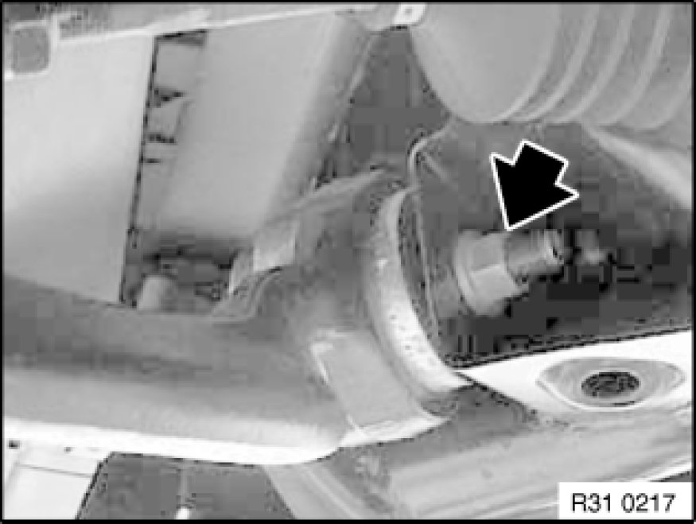

Removing and Installing/Replacing Left or Right Tension Strut
31 12 050 - Removing and installing/replacing left or right tension strut

Important!
With build date 12/06 the tension strut to guide joint connection was increased by 10 mm. The upshot of this is that on vehicles up to 12/06 the guide joint Removing and Installing/Replacing Guide Joint in Swivel Bearing must also be replaced.
Mixed fitting of tension struts is permitted!

Necessary preliminary tasks:
- Remove front assembly underside protection Removing and Installing/Replacing Front Underbody Protection
- If necessary, remove steering gear cover.
- Detach front wheel arch trim Service and Repair
- Remove guide joint Removing and Installing/Replacing Guide Joint in Swivel Bearing
Release screw (1).
Release nut on rear side.
Swivel holder (2) for engine shielding at front towards center of vehicle and remove towards bottom.

Unfasten nut.
Remove screw towards front.
Remove tension strut.
Installation Note:
Replace self-locking nut.
Tighten bolt connection in normal position Moving Vehicle Into Normal Position.
Tightening torque 31 12 1AZ Control Arms and Struts (Front).